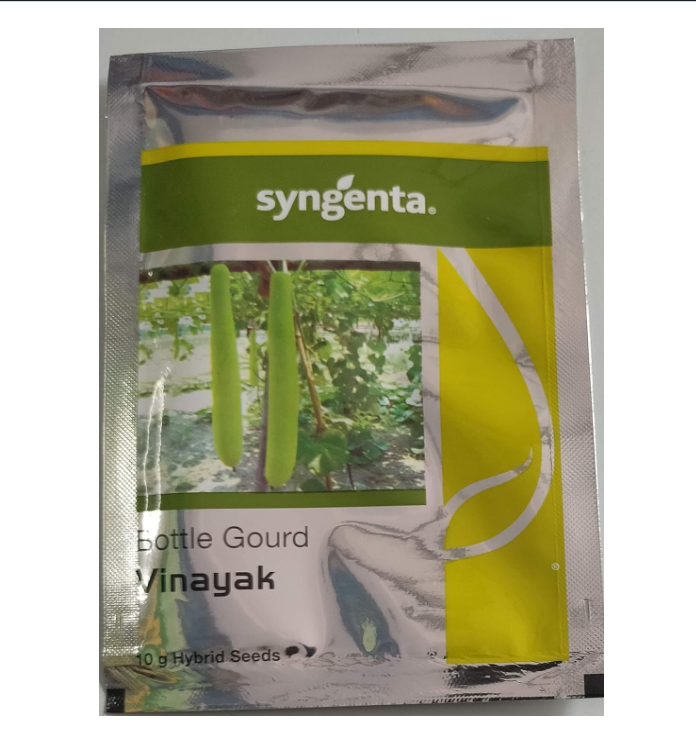
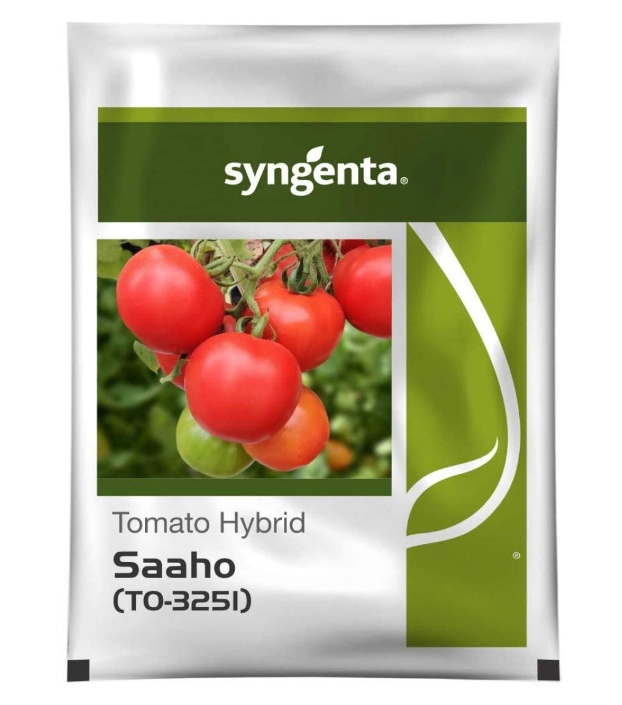
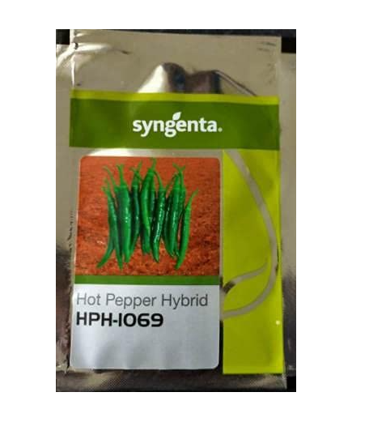
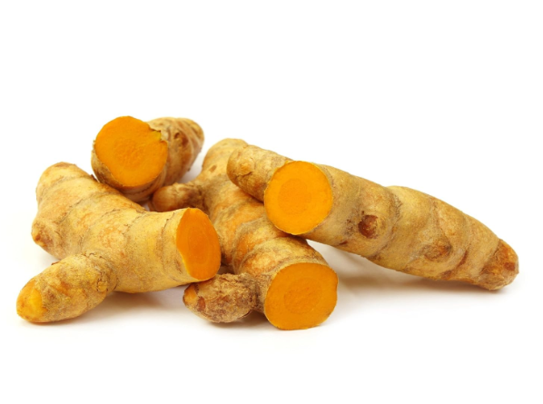
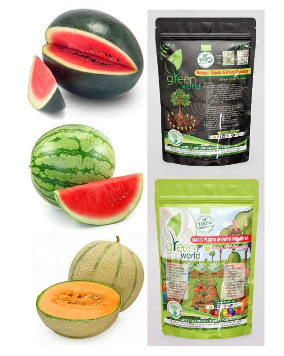
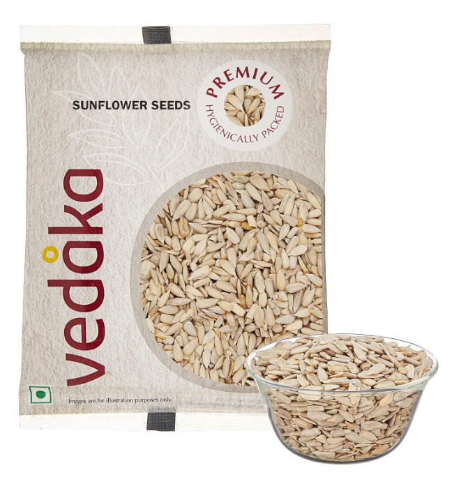
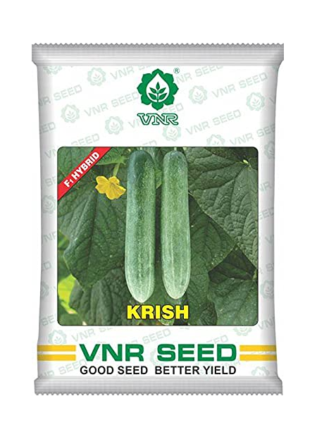
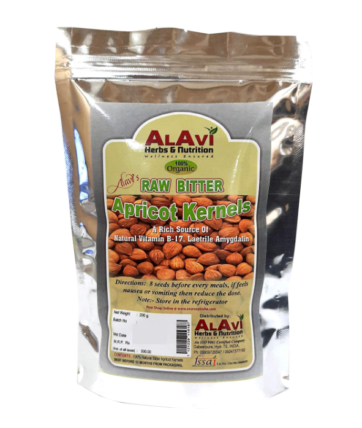
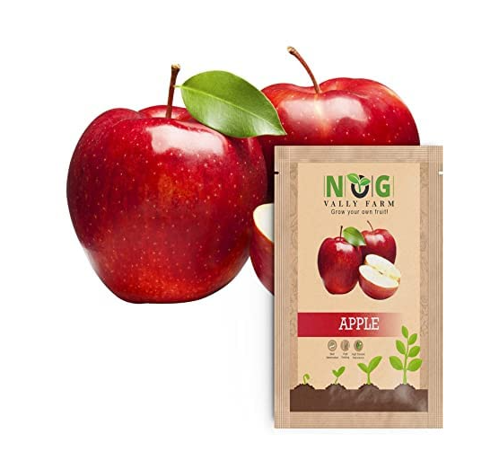
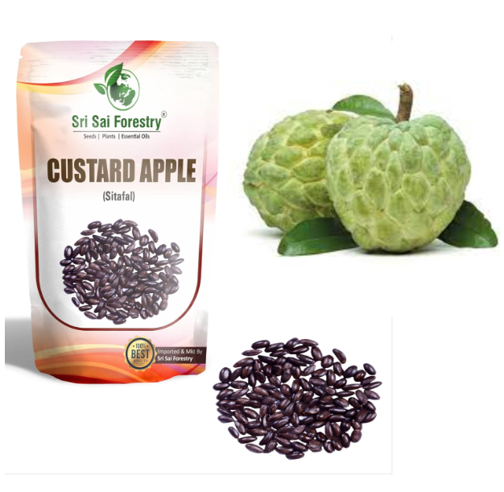

Syngenta Organic Hybrid B Gourd
₹966 MRP: ₹999
- Suitable soil:
- Sandy loamy soil pH(6.5-7.5)

Syngenta Saaho (TO-3251)Tomato seeds
₹1272 MRP: ₹1650
- Suitable soil:
- Sandy/red loam soil pH(6.0-7.0)

Syngenta HPH-1069 Hybrid Chilli Seeds
₹499 MRP: ₹580
- Suitable soil:
- Sandy loam type pH(5.5-8.5)

Organic Kisan Turmeric Seeds (Turmeric Roots)
₹147 MRP: ₹280
- Suitable soil:
- Clay loam soils pH(4.5-7.5)

Water Melon Sanya + Watermelon Aalam Daksh + Muskmelon Seeds Combo
₹349 MRP: ₹460
- Suitable soil:
- Sandy loam soil pH(6.0-7.0)

Vedaka Premium Raw Sunflower Seeds
₹119 MRP: ₹150
- Suitable soil:
- Alkaline soils pH(6.5-8.0)

VNR quality Cucumber seeds
₹380 MRP: ₹460
- Suitable soil:
- Sandy loam rich pH(6.5-7.5)

Alavi's 100% BITTER APRICOT SEEDS
₹485 MRP: ₹500
- Suitable soil:
- Moisture-retentive pH( acid-neutral)

Royal Apple Seed Premium pack
₹90 MRP: ₹260
- Suitable soil:
- Loam soil depth 45cm pH(5.5-6.5)

Custard Apple Seeds
₹186 MRP: ₹250
- Suitable soil:
- well drained soil temp(20-35oC)